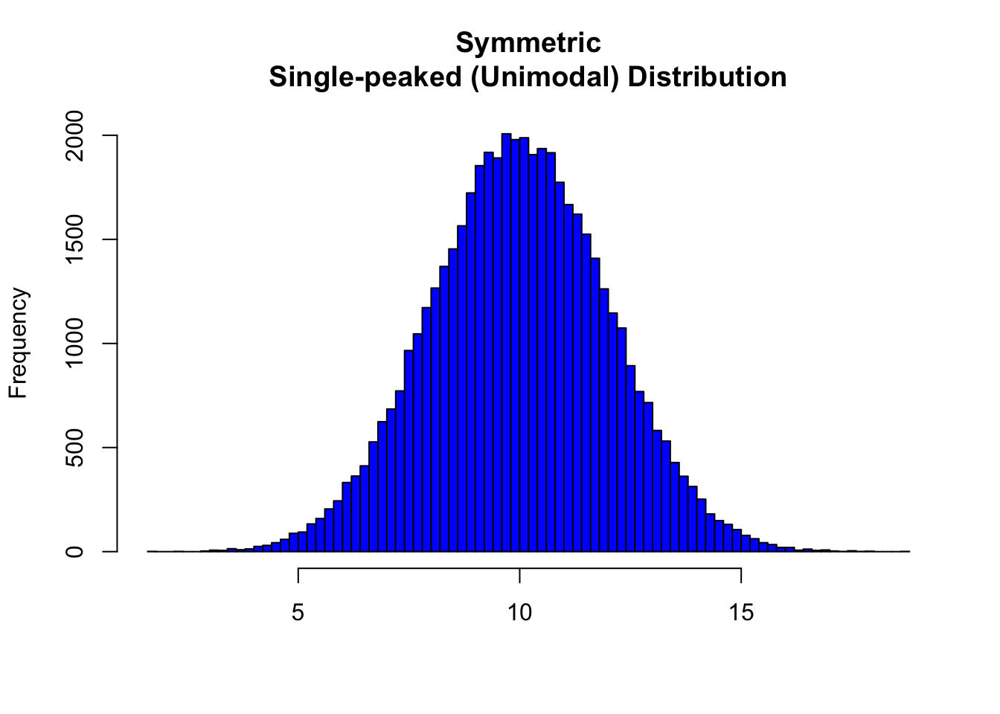
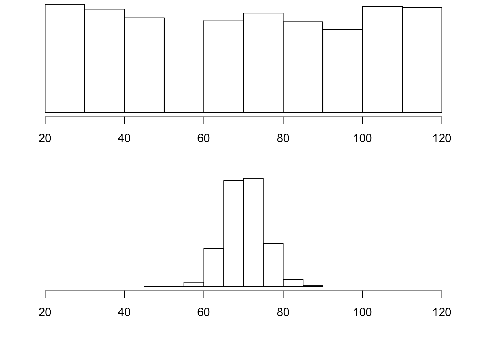

8.3 Skewed Left Distributions

A distribution is called skewed left if, as in the histogram above, the left tail (smaller values) is much longer than the right tail (larger values). Note that in a skewed left distribution, the bulk of the observations are medium/large, with a few observations that are much smaller than the rest. An example of a real life variable that has a skewed left distribution is age of death from natural causes (heart disease, cancer, etc.). Most such deaths happen at older ages, with fewer cases happening at younger ages.
Recall our grades example:

As you can see from the histogram, the grades distribution is roughly symmetric.
Center
The center of the distribution is its midpoint—the value that divides the distribution so that approximately half the observations take smaller values, and approximately half the observations take larger values. Note that from looking at the histogram we can get only a rough estimate for the center of the distribution. (More exact ways of finding measures of center will be discussed in the next section.)
Recall our grades example (image above). As you can see from the histogram, the center of the grades distribution is roughly 70 (7 students scored below 70, and 8 students scored above 70).
Spread
The spread (also called variability) of the distribution can be described by the approximate range covered by the data. From looking at the histogram, we can approximate the smallest observation (minimum), and the largest observation (maximum), and thus approximate the range.
In our example:
exam <- c(88, 48, 60, 51, 57, 85, 69, 75, 97, 72, 71, 79, 65, 63, 73)
min(exam)[1] 48max(exam)[1] 97range(exam)[1] 48 97Outliers
Outliers are observations that fall outside the overall pattern. For example, the following histogram represents a distribution that has a high probable outlier:

The overall pattern of the distribution of a quantitative variable is described by its shape, center, and spread. By inspecting the histogram, we can describe the shape of the distribution, but, as we saw, we can only get a rough estimate for the center and spread. A description of the distribution of a quantitative variable must include, in addition to the graphical display, a more precise numerical description of the center and spread of the distribution.
The two main numerical measures for the center of a distribution are the mean and the median. Each one of these measures is based on a completely different idea of describing the center of a distribution.
Mean
The mean is the average of a set of observations (i.e., the sum of the observations divided by the number of observations). If the \(n\) observations are \(x_1, x_2,\ldots,x_n\), their mean, which we denote \(\bar{x}\) (and read x-bar), is therefore: \[\bar{x}=\frac{x_1+ x_2+\cdots+x_n}{n}\].
World Cup Soccer
The data frame SOCCER from the PASWR2 package contains how many goals were scored in the regulation 90 minute periods of World Cup soccer matches from 1990 to 2002.
| Total # of Goals | Game Frequency |
|---|---|
| 0 | 19 |
| 1 | 49 |
| 2 | 60 |
| 3 | 47 |
| 4 | 32 |
| 5 | 18 |
| 6 | 3 |
| 7 | 3 |
| 8 | 1 |
To find the mean number of goals scored per game, we would need to find the sum of all 232 numbers, then divide that sum by 232. Rather than add 232 numbers, we use the fact that the same numbers appear many times. For example, the number 0 appears 19 times, the number 1 appears 49 times, the number 2 appears 60 times, etc.
If we add up 19 zeros, we get 0. If we add up 49 ones, we get 49. If we add up 60 twos, we get 120. Repeated addition is multiplication.
Thus, the sum of the 232 numbers = 0(19) + 1(49) + 2(60) + 3(47) + 4(32) + 5(18) + 6(3) + 7(3) + 8(1) = 575. The mean is 575 / 232 = 2.478448.
This way of calculating a mean is sometimes referred to as a weighted average, since each value is “weighted” by its frequency.
library(PASWR2)
FT <- xtabs(~goals, data = SOCCER)
FTgoals
0 1 2 3 4 5 6 7 8
19 49 60 47 32 18 3 3 1 pgoal <- FT/575
pgoalgoals
0 1 2 3 4 5
0.033043478 0.085217391 0.104347826 0.081739130 0.055652174 0.031304348
6 7 8
0.005217391 0.005217391 0.001739130 ngoals <- as.numeric(names(FT))
ngoals[1] 0 1 2 3 4 5 6 7 8weighted.mean(x = ngoals, w = pgoal)[1] 2.478448mean(SOCCER$goals, na.rm = TRUE)[1] 2.478448Median
The median (\(M\)) is the midpoint of the distribution. It is the number such that half of the observations fall above and half fall below. To find the median:
- Order the data from smallest to largest
- Consider whether \(n\), the number of observations, is even or odd.
- If \(n\) is odd, the median \(M\) is the center observation in the ordered list. This observation is the one “sitting” in the \((n + 1)/2\) spot in the ordered list
- If \(n\) is even,the median \(M\) is the mean of the two center observations in the ordered list. These two observations are the ones “sitting” in the \(n/2\) and \((n/2) + 1\) spots in the ordered list.
For the SOCCER example, the median number of goals is the average of the values at the 232/2 = 116 ordered location (a two) and the 232/2 + 1 = 117 ordered location (also a two). The average of two 2s is a 2. Using the median function in R below verifies the answer.
median(SOCCER$goals, na.rm = TRUE)[1] 2Comparing the Mean and Median
As we have seen, the mean and the median, the most common measures of center, each describe the center of a distribution of values in a different way. The mean describes the center as an average value, in which the actual values of the data points play an important role. The median, on the other hand, locates the middle value as the center, and the order of the data is the key to finding it.
To get a deeper understanding of the differences between these two measures of center, consider the following example.
Here are two datasets:
Data set A \(\rightarrow\) (64, 65, 66, 68, 70, 71, 73)
Data set B \(\rightarrow\) (64, 65, 66, 68, 70, 71, 730)
DataA <- c(64, 65, 66, 68, 70, 71, 73)
DataB <- c(64, 65, 66, 68, 70, 71, 730)
meanA <- mean(DataA)
meanB <- mean(DataB)
medianA <- median(DataA)
medianB <- median(DataB)
c(meanA, meanB, medianA, medianB)[1] 68.14286 162.00000 68.00000 68.00000For dataset A, the mean is 68.1428571, and the median is 68. Looking at dataset B, notice that all of the observations except the last one are close together. The observation 730 is very large, and is certainly an outlier. In this case, the median is still 68, but the mean will be influenced by the high outlier, and shifted up to 162. The message that we should take from this example is:
The mean is very sensitive to outliers (because it factors in their magnitude), while the median is resistant to outliers.
Therefore:
- For symmetric distributions with no outliers: \(\bar{x}\) is approximately equal to \(M\).

In the distribution above, the mean is 9.9965127 and the median is 9.9925812.
- For skewed right distributions and/or data sets with high outliers: \(\bar{x} > M\)

In the distribution above, the mean is 0.1998402 and the median is 0.168208.
- For skewed left distributions and/or data sets with high outliers: \(\bar{x} < M\)

In the distribution above, the mean is 1.8001598 and the median is 1.831792.
We will therefore use \(\bar{x}\) as a measure of center for symmetric distributions with no outliers. Otherwise, the median will be a more appropriate measure of the center of our data.
Measures of Spread
So far we have learned about different ways to quantify the center of a distribution. A measure of center by itself is not enough, though, to describe a distribution. Consider the following two distributions of exam scores. Both distributions are centered around 70 (the mean and median of both distributions is approximately 70), but the distributions are quite different. The first distribution has a much larger variability in scores compared to the second one.

In order to describe the distribution, we therefore need to supplement the graphical display not only with a measure of center, but also with a measure of the variability (or spread) of the distribution.
Range
The range covered by the data is the most intuitive measure of variability. The range is exactly the distance between the smallest data point (Min) and the largest one (Max). Range = Max - Min
Standard Deviation
The idea behind the standard deviation is to quantify the spread of a distribution by measuring how far the observations are from their mean, \(\bar{x}\). The standard deviation gives the average (or typical distance) between a data point and the mean, \(\bar{x}\).
Notation
There are many notations for the standard deviation: SD, s, Sd, StDev. Here, we’ll use SD as an abbreviation for standard deviation and use s as the symbol.
Calculation
In order to get a better understanding of the standard deviation, it would be useful to see an example of how it is calculated. In practice, we will use statistical software to do the calculation.
Video Store Calculations
The following are the number of customers who entered a video store in 8 consecutive hours:
7, 9, 5, 13, 3, 11, 15, 9
To find the standard deviation of the number of hourly customers:
Find the mean, \(\bar{x}\) of your data: \(7 + 9 + 5 + ... + 98 = 9\)
Find the deviations from the mean: the difference between each observation and the mean \((7 - 9), (9 - 9), (5 - 9), (13 - 9), (3 - 9), (11 - 9), (15 - 9), (9 - 9)\)
These numbers are \(-2, 0, -4, 4, -6, 2, 6, 0\)
Since the standard deviation is the average (typical) distance between the data points and their mean, it would make sense to average the deviations we got. Note, however, that the sum of the deviations from the mean, \(\bar{x}\), is 0 (add them up and see for yourself). This is always the case, and is the reason why we have to do a more complicated calculation to determine the standard deviation
Square each of the deviations: The first few are: \((-2)^2 = 4, (0)^2 = 0, (-4)^2 = 16\), and the rest are \(16, 36, 4, 36, 0\)
Average the square deviations by adding them up and dividing by \(n - 1\) (one less than the sample size): \(4+0+16+16+36+4+36+0(8−1)=1127=16\)
The reason why we “sort of” average the square deviations (divide by \(n −1\) ) rather than take the actual average (divide by $$) is beyond the scope of the course at this point, but will be addressed later.
This average of the squared deviations is called the variance of the data.
- The SD of the data is the square root of the variance: SD \(= \sqrt{16} = 4\)
- Why do we take the square root? Note that 16 is an average of the squared deviations, and therefore has different units of measurement. In this case 16 is measured in “squared customers”, which obviously cannot be interpreted. We therefore take the square root in order to compensate for the fact that we squared our deviations and in order to go back to the original unit of measurement.
Recall that the average number of customers who enter the store in an hour is 9. The interpretation of SD = 4 is that, on average, the actual number of customers that enter the store each hour is 4 away from 9.
x <- c(7, 9, 5, 13, 3, 11, 15, 9)
n <- length(x)
xbar <- mean(x)
xbar[1] 9dev <- x - xbar
dev[1] -2 0 -4 4 -6 2 6 0dev2 <- dev^2
dev2[1] 4 0 16 16 36 4 36 0cbind(x, dev, dev2) x dev dev2
[1,] 7 -2 4
[2,] 9 0 0
[3,] 5 -4 16
[4,] 13 4 16
[5,] 3 -6 36
[6,] 11 2 4
[7,] 15 6 36
[8,] 9 0 0VAR <- sum(dev2)/(n - 1)
VAR[1] 16SD <- sqrt(VAR)
SD[1] 4# Or using functions var() and sd()
var(x)[1] 16sd(x)[1] 4Univariate Graphing Lab
There are a variety of conventional ways to visualize data-tables, histograms, bar graphs, etc. Now that your data have been managed, it is time to graph your variables one at a time and examine both center and spread.
Recall that the data visualization cheat sheet has many helpful commands for graphing your data.
Univariate Graphing Assignment
Post univariate graphs of your two main constructs to your private GitHub repository (i.e. data managed variables). Write a few sentences describing what your graphs reveal in terms of shape, spread, and center.